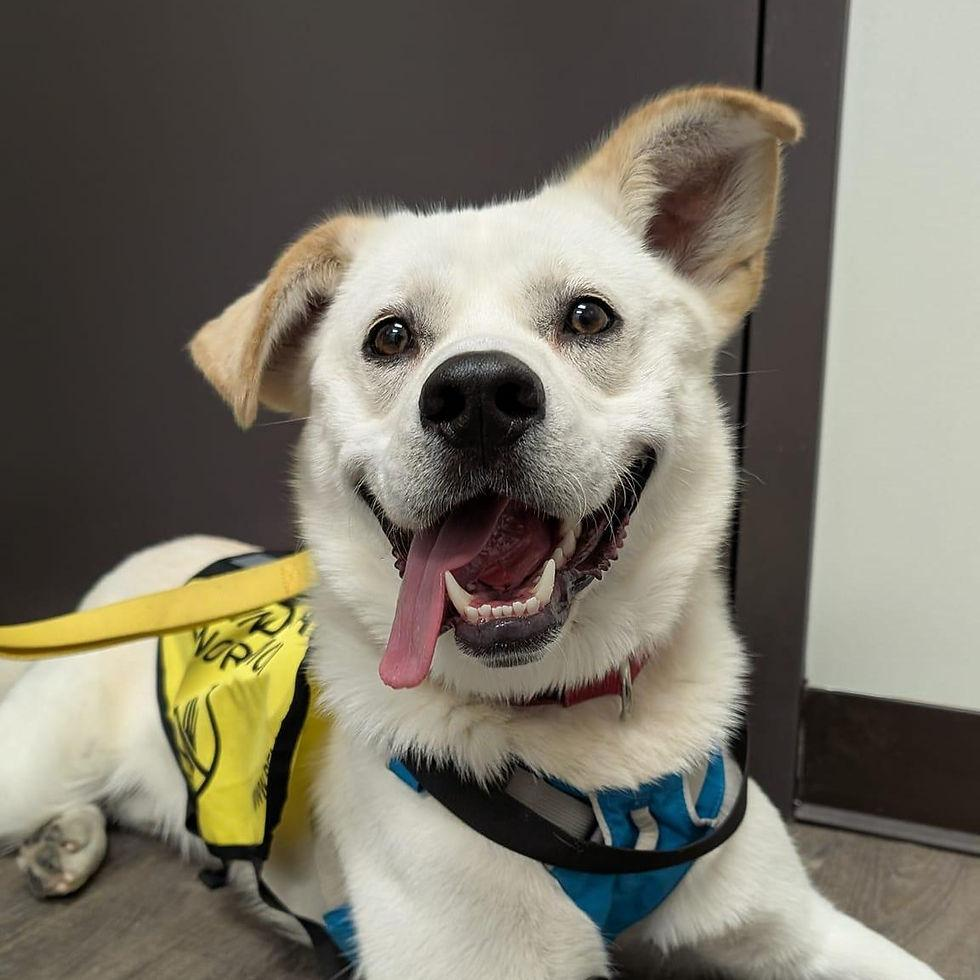

Every Dog Deserves a Loving Home
Paws Haven Animal Rescue is a non-profit organisation dedicated to rescuing, sheltering, and providing medical care to abandoned, injured, and stray dogs in our community. Since our founding, we have helped countless dogs find safety, healing, and forever homes.
Meet Our DogsWhat We Do
- Emergency shelter intake for abandoned and stray dogs
- Veterinary treatment and medical rehabilitation
- Responsible matching and rehoming with adoptive families
- Community education on responsible pet ownership
Get Involved
Whether you want to adopt, volunteer your time, or sponsor a dog's medical care, there are many ways to support our mission. Visit our enquiry page to find out how you can help, or read our story and meet the team.